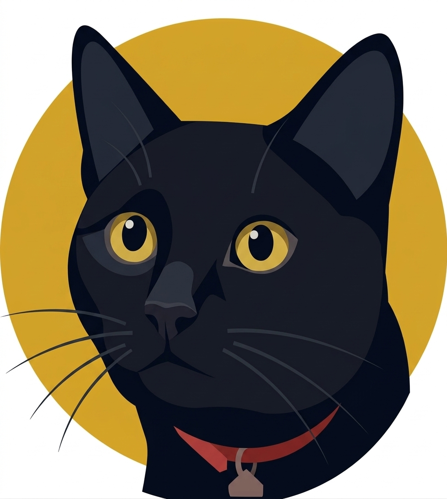

~/home
About Me

I'm Oli. I'm a software engineer based in the south-east UK where I've lived all my life.
When I'm not working I'm usually playing or writing about computer games which I've been playing since I was 5 or 6 years old. I wear my nostalgia goggles a lot and I'm far more fond of older games than I am of most things that are being released nowadays. My favourite systems are the PlayStation and PlayStation 2 for which I have a large collection.
I enjoy photography and birding, two hobbies I picked up back in 2024. I'm not particularly great at either but I try and post some photos of birds here on the odd occasion I snap a keeper (assuming my cat Poncho hasn't got there first).
Finally, I'm the proud father of my daughter who was born in May 2026 and for whom I want to be the best role model possible.
Status
A list of things I'm currently working on, games I'm playing, or places I'm going.